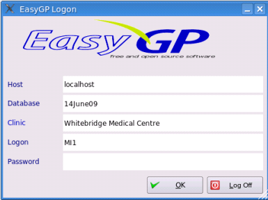

Starting EasyGP

When you first run EasyGP you will be presented with the logon screen
- Host is the address of the server running an easyGP database, either on the local network or on the Internet. It will usually be set to the default `localhost' (meaning the same computer), but can be a domain name or an IP address.
- Database is the name of the database you wish to access, almost always `easygp'.
- User is your user code, usually your initials. Remember the easygp administrator user is always `easygp'.
- Password is your assigned password. For the admin user this was entered during the install process inBuilding your Database. Note this adminstrator user can't access clinical screens: for medico-legal reasons any clinical action taken by a user
must be mappable to a real person. user accounts with real people's names can be created through the Contacts
section (
Contacts) which the administrator does have access to.